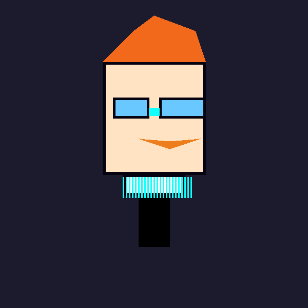
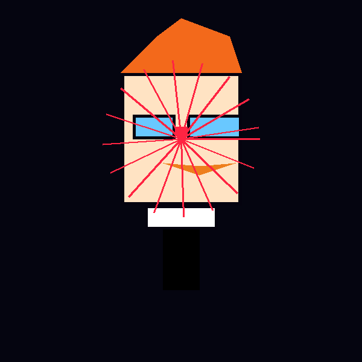
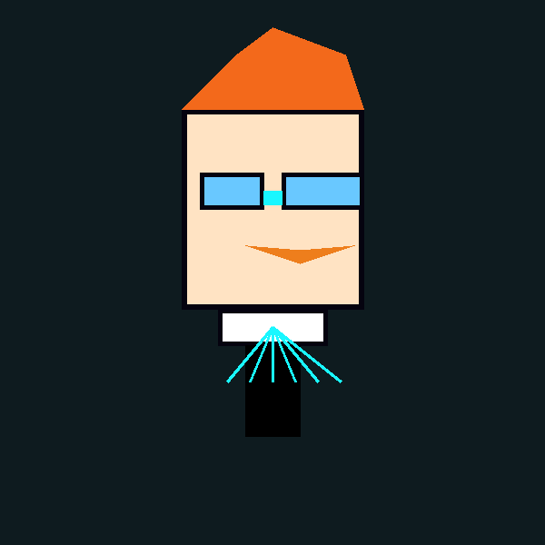

Cyber-Lab DexterBot
Cued from the reference: oversized round glasses, square jaw, and wild orange hair. I layered neon circuitry across the goggles, and a transparent lab coat collar beams into wires so it reads like Dexter from the image but in a futuristic AI body.
neon goggles + circuit tattoos

Quantum Dex AI
Dexter’s proportions (big brow, small body, white coat collar) anchor this design, then I added a “D”-shaped visor, orbiting data frame, and neural lattice chest so it feels like a powered-up, cosmic version of the cartoon genius.
visor data streams + rotating frame

Lab Assistant Hologram
Inspired by the silhouette in your reference: full orange tuft, round glasses, and trademark collar. His body breaks into light trails and data panels, making him feel like Dexter himself came alive as a holographic AI.
silhouette + holo UI